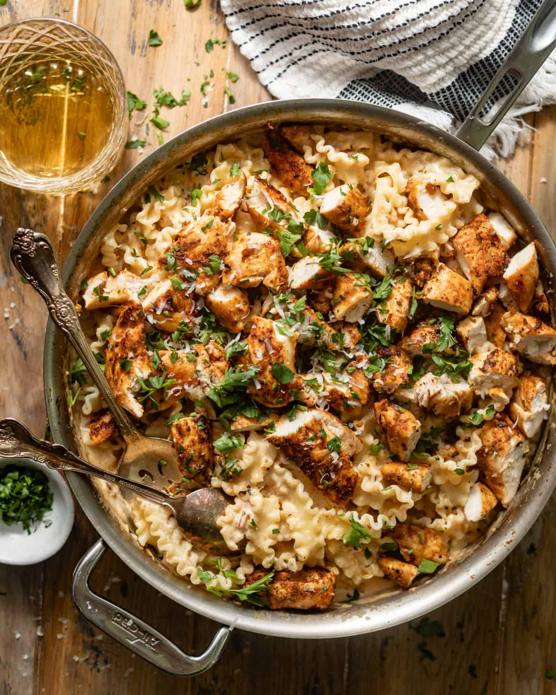
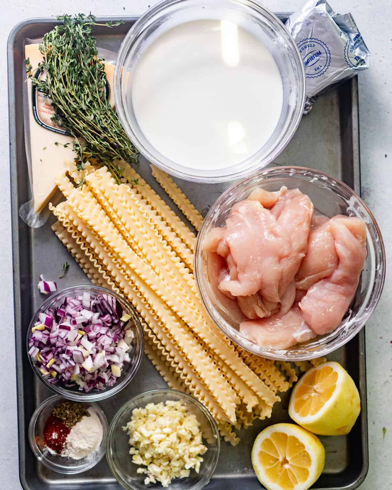
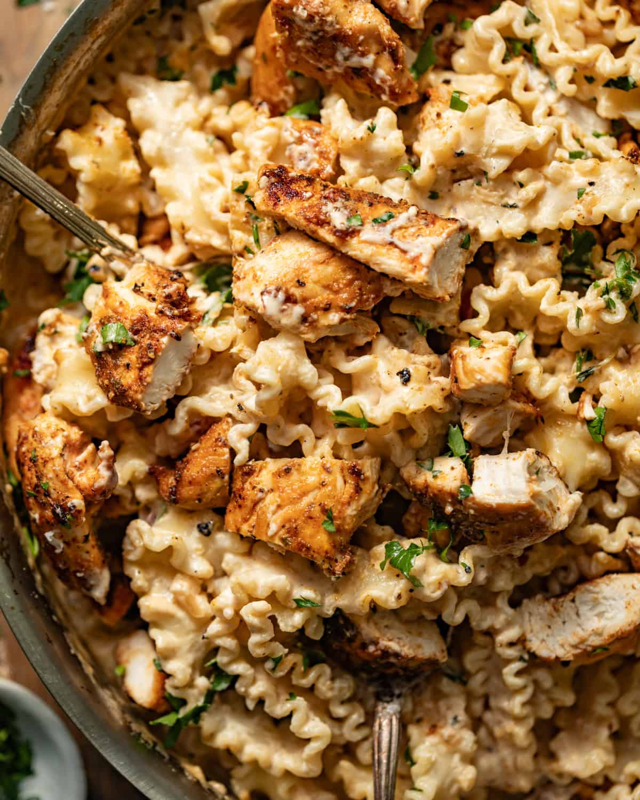

Sample Imagery



Ingredients
Chicken
- 1 1/2 pounds chicken tenderloins or boneless skinless chicken thighs
- 1 teaspooon smoked paprika
- 1 teaspoon oregano
- 1 teaspoon garlic powder
- 1 teaspoon kosher salt
- 1/2 teaspoon black pepper
- 2 tablespoons olive oil
Garlic Parmesan Sauce
- 2 tablespoons, salted butter
- 2 shallots, diced
- 8 cloves garlic, diced
- 4 sprigs thyme, stems removed
- 1 cup dry white wine
- 2 tablespoons chicken bouillon paste
- 2 cups heavy cream
- 4 ounces cream cheese
- 1 1/2 cups freshly grated parmesan cheese
- 1 tablespoon lemon juice
- 1 tablespoon hot sauce
- 3 tablespoons fresh parsley, chopped
- 12 ounces pasta
- Salt and pepper to taste
Instructions
- Pat the chicken dry. Season it with smoked paprika, oregano, garlic powder, onion powder, kosher salt, and black pepper.
- Heat the olive oil in a large skillet over medium heat. Cook the chicken for approximately 5-7 minutes on each side. Remove the chicken from the pan, cover it, and allow it to rest.
- Add butter to the same skillet. Add the shallots and cook until softened. Add the garlic and continue cooking for another 2-3 minutes.
- Add thyme and white wine to the skillet. Allow the wine to cook for about 5 minutes. Stir in the flour and chicken bouillon paste.
- Add the heavy cream and cream cheese. Sir until the cream cheese has melted and the mixture becomes smooth.
- Cook the sauce over low heat until it begins to thicken. Add parmesan cheese, lemon juice, hot sauce, and parsley. Season with salt and pepper as needed.
- Cook the pasta in a large pot of salted water according to the package directions until al dente. Before draining, reserve approximately one cup of pasta water
- If the sauce is too thick, add a small amount of the reserved pasta water until it reaches the desired consistency.
- Cut the cooked chicken into bite-sized pieces and return it to the sauce along with its juices. Add the cooked pasta, toss everything together, and serve.
Recipe Source: Garlic Parmesan Pasta with Chicken by Britney Breaks Bread
Recipe Website References
Food.com
I really like how Food.com makes the most importnat recipe information easy to find by clearly separating the ingredients from the directions. Information such as cooking time and serving information is also positioned near the beginning of the page, whic helps users quickly understnad the recipe before they begin cooking.
NYT Cooking
NYT Cooking has a clean and editorial design that gives its photography and typography plenty of space. I like how the site keeps the layouts relatively simple and uses strong hierarchy so that users can focus on the recipe rather than being overwhelmed by unnessary visual elements.
Allrecipes
Allrecipes does a good job of mkaing recipes easy to scan while also incorporating a lot of information from other home cooks. Ratings, reviews, recipe images, and clearly organized recipe information provide users with additional context while still keeping the actual cooking instructions accessible.
Non-Recipe Website References
National Geographic
National Geographic makes photogrpahy an important part of storytelling rather than simply using images as decoration. I would like to use a similar approach by incorporating large, detailed food photography throughout my recipe and using clear typography and section breaks to guide the user through the page.
Disney
Disney uses large imagery and clearly separated content sections to create an immersive experience while still allowing users to easily move through the page. I like how different sections can have their own visual identity while still feeling connected, which could inspire the way I distinguish ingredients, preparation, and instructions on my recipe page
Target
Target presents a large amount of information using structured grids, cards, images, and consistent spacing, which makes content easy to scan. I could apply this organization to my recipe by placing information such as ingredients or recipe details into clearly defined visual groups instead of presenting everything as one long block of text.